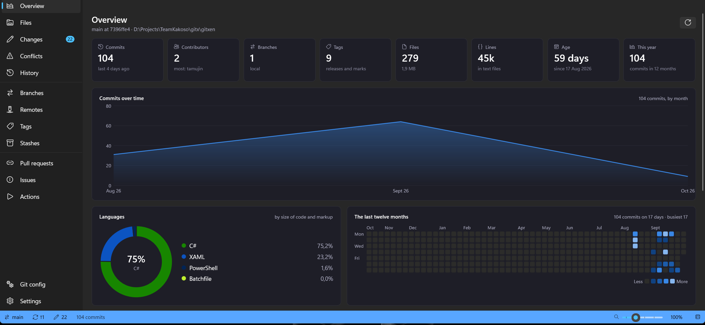

@@ reading history @@- git log --graph --oneline --all | less+ Timeline: lanes, ref badges, CI result per commit
Two-line rows with author chips. Filter as you type, or search messages, authors and content with -S and -G.
Gitxen runs the git you already have and shows you every command it ran. Stage by hunk, rebase by dragging, find any commit in any repository. Free and open source under the GPL.
irm https://raw.githubusercontent.com/KakosoAi/gitxen/main/setup/gitxen/install.ps1 | iexPer user, no admin rights needed. Checks the download against its published SHA-256.
Windows 10 (1809) or later, x64. Needs git installed.

Each card is a diff. Red is the way it is usually done; green is what Gitxen does instead.
@@ reading history @@- git log --graph --oneline --all | less+ Timeline: lanes, ref badges, CI result per commit
Two-line rows with author chips. Filter as you type, or search messages, authors and content with -S and -G.
@@ staging part of a file @@- git add -p # y n q a d s e ?+ click the hunk you want staged
Stage, unstage and discard per file or per hunk. Amend and sign-off are one click.
@@ cleaning up a branch @@- git rebase -i HEAD~8 # pick… squash… in vim+ drag to reorder; reword, squash, fix up, drop
A visual interactive rebase that shows what each step does before it runs, and undo when it did not go to plan.
@@ "which repo was that in?" @@- cd ../repo-a && git log --grep … ; cd ../repo-b …+ Ctrl+K finds a commit in every repository
A local full-text index of every repository you open. Also from the command line: gx search.
@@ before it leaves your machine @@- git push # …and the .env went with it+ warns about keys, tokens and 100 MB files first
Checks what you are about to commit or push for cloud keys, tokens, private keys and files too big for GitHub.
@@ pull requests, issues, Actions @@- alt-tab to the browser, find the run, scroll the log+ PRs, issues and failed steps beside the code
Through the GitHub CLI you already use. Each repository acts as the account that can see it.
The bottom pane runs your real shell in the repository's folder, drawn the way Windows Terminal draws it. Your prompt, your font, your colours.
~/gitxen main ❯ gx stats gitxen at 99b858c3 Commits 23 last just now Contributors 2 most: tamujin Files 327 2.4 MB Lines 47,995 in text files C# ██████████████████░░░░░░░░░░ 64.7% XAML █████░░░░░░░░░░░░░░░░░░░░░░░ 19.5% ~/gitxen main ❯ gx search "targeting pack" 8d1620b gitxen fix(build): download the Windows SDK targeting pack so a clean machine builds ~/gitxen main ❯
gx on the command line. Repository stats, search across repositories, new repositories from a template, and a GitHub account per repository for push and pull.The promises, written the way git stores settings.
gitxen.git=yoursRuns the git.exe you installed, as a separate program. Nothing is re-implemented, so the result is what git says.gitxen.telemetry=noneNo usage data, no analytics, no account of its own.gitxen.tokens=held-by-ghGitHub sign-in stays in the GitHub CLI. Gitxen asks it for a token per command and never stores one.gitxen.ai=opt-inAI-written commit messages only if you add your own Anthropic key; it is kept in Windows Credential Manager.gitxen.license=GPL-3.0-or-laterFree to use, study, change and share. A copy you distribute stays open too.The code, the issues and the releases are all on GitHub. Small fixes and good first issues are the easiest way in; contributors sign a short CLA once.